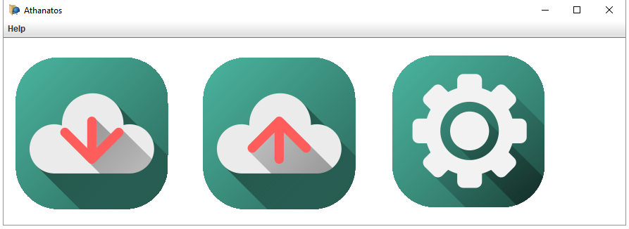

Athanatos

In collaboration with t1meshift. Data storage for business based on blockchain technology. Is written on Java. All the data is stored in the blockchain, which is synchronized beetween the company's computers. Now in development (initially works). Written on VL Hackaton spring 2017.
Raycaster

A raycasting engine written with my friend, t1meshift, using Lazarus IDE. Uses SDL2 for hardware render, SquallSound for sound. Supports textures, transparency, solid and not solid walls, colisions, diffenent resolutions and FOV's. Now is is in development.